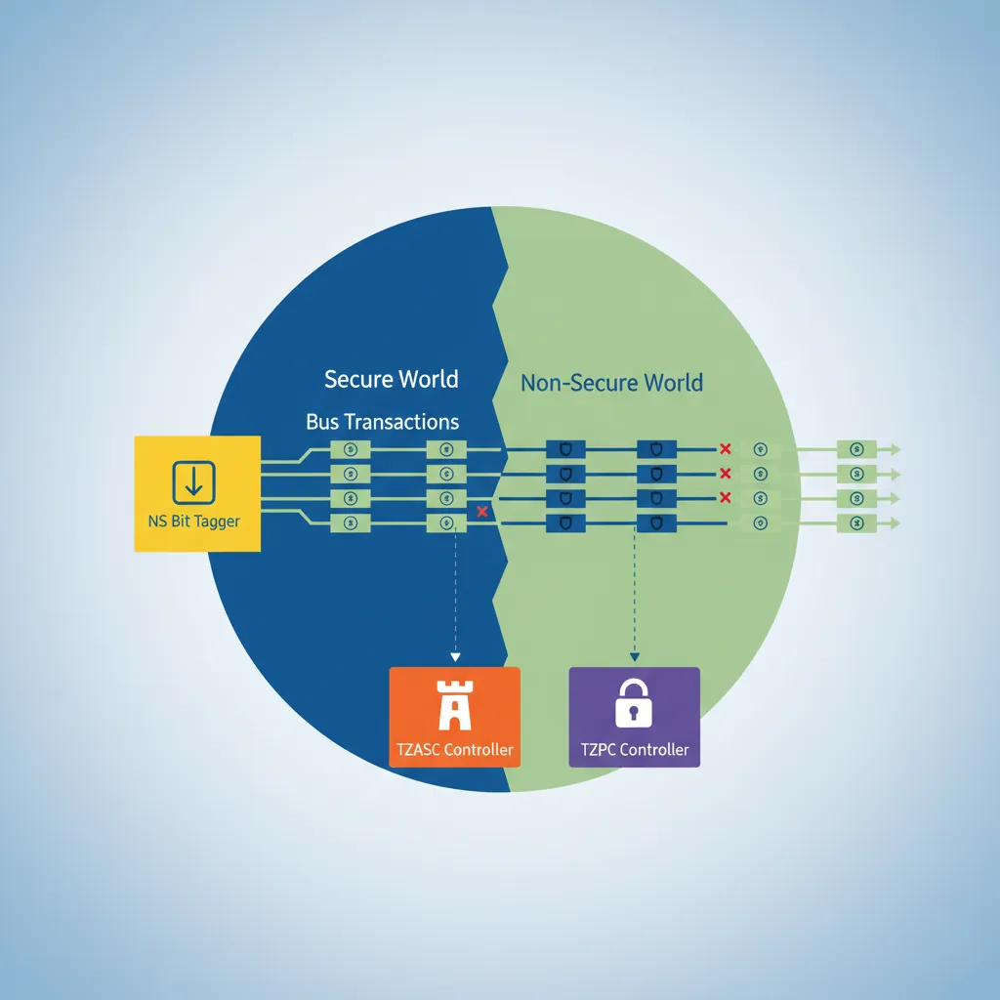
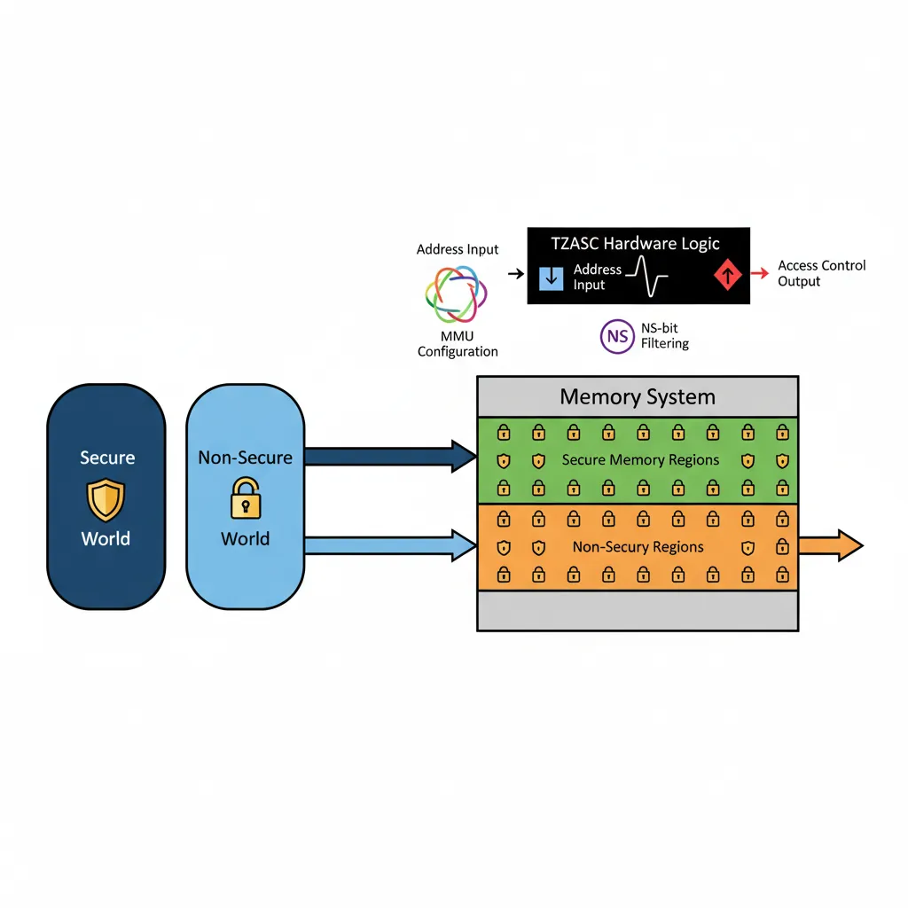
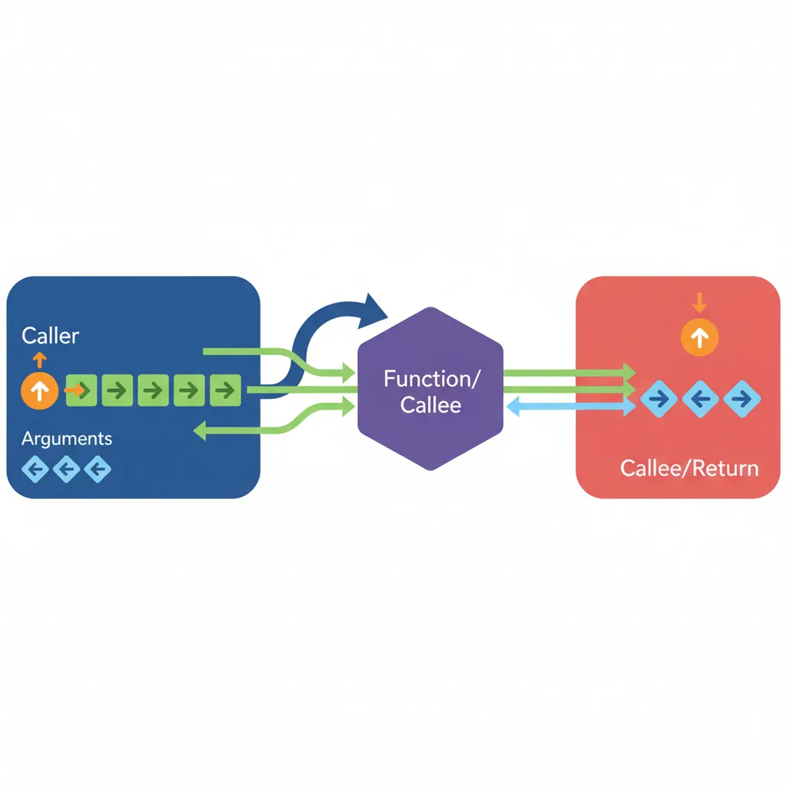
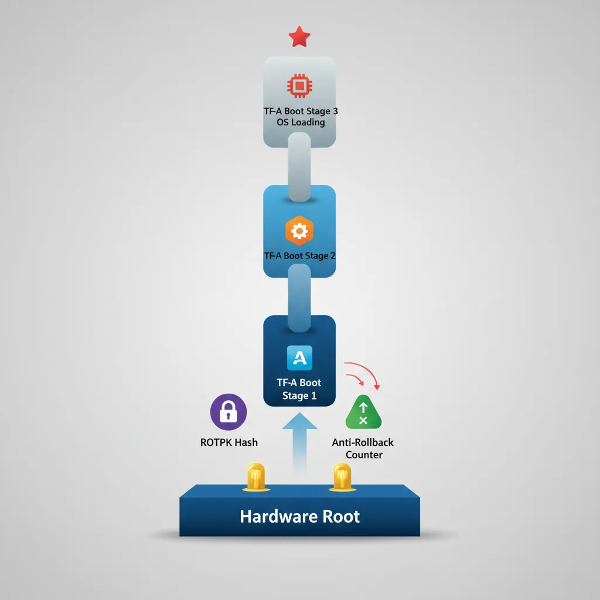
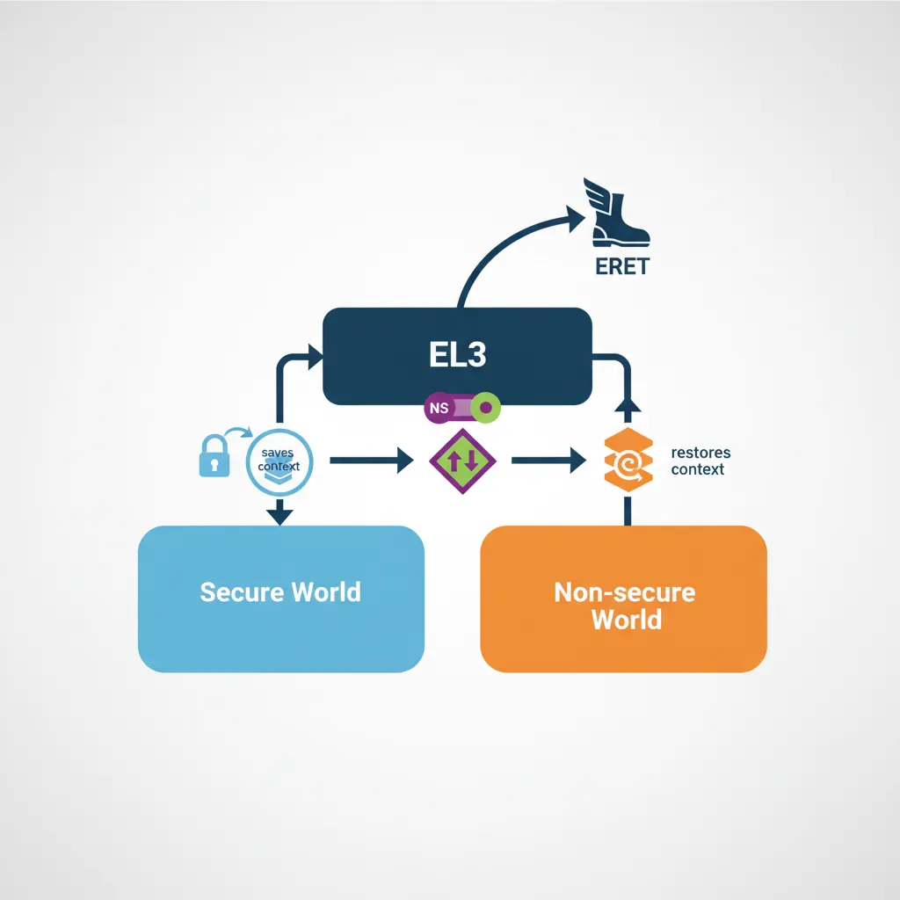

Introduction & Security Model
ARM Assembly Mastery
Architecture History & Core Concepts
ARMv1→v9, RISC philosophy, profilesARM32 Instruction Set Fundamentals
ARM vs Thumb, registers, CPSR, barrel shifterAArch64 Registers, Addressing & Data Movement
X/W regs, addressing modes, load/store pairsArithmetic, Logic & Bit Manipulation
ADD/SUB, bitfield extract/insert, CLZBranching, Loops & Conditional Execution
Branch types, link register, jump tablesStack, Subroutines & AAPCS
Calling conventions, prologue/epilogueMemory Model, Caches & Barriers
Weak ordering, DMB/DSB/ISB, TLBNEON & Advanced SIMD
Vector ops, intrinsics, media processingSVE & SVE2 Scalable Vector Extensions
Predicate regs, gather/scatter, HPC/MLFloating-Point & VFP Instructions
IEEE-754, scalar FP, rounding modesException Levels, Interrupts & Vector Tables
EL0–EL3, GIC, fault debuggingMMU, Page Tables & Virtual Memory
Stage-1 translation, permissions, huge pagesTrustZone & ARM Security Extensions
Secure monitor, world switching, TF-ACortex-M Assembly & Bare-Metal Embedded
NVIC, SysTick, linker scripts, low-powerCortex-A System Programming & Boot
EL3→EL1 transitions, MMU setup, PSCIApple Silicon & macOS ABI
ARM64e PAC, Mach-O, dyld, perf countersInline Assembly, GCC/Clang & C Interop
Constraints, clobbers, compiler interactionPerformance Profiling & Micro-Optimization
Pipeline hazards, PMU, benchmarkingReverse Engineering & ARM Binary Analysis
ELF, disassembly, CFR, iOS/Android quirksBuilding a Bare-Metal OS Kernel
Bootloader, UART, scheduler, context switchARM Microarchitecture Deep Dive
OOO pipelines, reorder buffers, branch predictVirtualization Extensions
EL2 hypervisor, stage-2 translation, KVMDebugging & Tooling Ecosystem
GDB, OpenOCD/JTAG, ETM/ITM, QEMULinkers, Loaders & Binary Format Internals
ELF deep dive, relocations, PIC, crt0Cross-Compilation & Build Systems
GCC/Clang toolchains, CMake, firmware genARM in Real Systems
Android, FreeRTOS/Zephyr, U-Boot, TF-ASecurity Research & Exploitation
ASLR, PAC attacks, ROP/JOP, kernel exploitEmerging ARMv9 & Future Directions
MTE, SME, confidential compute, AI accelTrustZone adds a single hardware bit — the NS (Non-Secure) bit — to every bus transaction on the AMBA AXI bus. Peripherals and DRAM controllers use this bit to enforce access control: Secure-world transactions (NS=0) can reach any address; Non-Secure transactions (NS=1) are blocked from Secure-only regions by the TZASC (TrustZone Address Space Controller) and TZPC (TrustZone Protection Controller). The CPU's current world is determined by SCR_EL3.NS at EL3, and by the implied state when running below EL3.

Secure vs Non-Secure Worlds
SCR_EL3 — Secure Configuration
// SCR_EL3 key bits:
// [0] NS — 0=Secure, 1=Non-Secure (current world when in EL1/EL0)
// [1] IRQ — 1=IRQs taken to EL3 (else to EL1)
// [2] FIQ — 1=FIQs taken to EL3
// [3] EA — 1=SErrors taken to EL3
// [4] SMD — 1=Disable SMC instruction at EL1 and above
// [10] RW — 1=EL1 is AArch64 (0=AArch32)
// [11] SIF — 1=Secure instruction fetch from Non-Secure memory prohibited
// Enter Non-Secure world from EL3 (Linux boot scenario):
MRS x0, SCR_EL3
ORR x0, x0, #(1 << 0) // NS=1: EL1 will be Non-Secure
ORR x0, x0, #(1 << 10) // RW=1: EL1 is AArch64
ORR x0, x0, #(1 << 2) // FIQ=1: route FIQ to EL3 (for secure interrupts)
BIC x0, x0, #(1 << 4) // SMD=0: SMC allowed from NS EL1
MSR SCR_EL3, x0
ISBNS Bit & Memory Tagging
Every read/write from the CPU carries the current world's NS bit through the cache and memory bus. The TZASC (typically AXI TrustZone Address Space Controller v1/v2 or GPC for newer SoCs) is configured at boot by Secure firmware to mark regions as Secure-only. Non-Secure masters attempting to access those physical pages receive a bus abort. This is enforced in hardware, independent of the MMU, making TrustZone the foundation for features like Android Strongbox keys, iOS Secure Enclave equivalents, and DRM content protection.

Banked Registers per World
Each world has its own complete set of EL0/EL1 system registers: TTBR0_EL1, TTBR1_EL1, TCR_EL1, SCTLR_EL1, SPSR_EL1, ELR_EL1, SP_EL0, SP_EL1, and the entire NEON/FP register file. When EL3 switches worlds by writing SCR_EL3.NS and executing ERET, the processor transparently switches to the Secure copies of these registers, giving the trusted OS its own fully independent virtual memory space and register state.
SMC — Secure Monitor Call
SMCCC Calling Convention
The ARM SMC Calling Convention (SMCCC v1.2) standardises how software invokes EL3 services. x0 contains the function identifier (32-bit encoding: [31]=call type, [30:24]=OEN, [16]=SMC32/64, [15:0]=function). x1–x7 carry arguments. EL3 services return results in x0–x3 (SMCCC ≥ 1.2: also x4–x7). This convention is used by PSCI, vendor-specific services, and hypervisor SMC calls.

// SMCCC example: PSCI CPU_ON to boot a secondary CPU
// Function ID: 0xC4000003 = PSCI64 CPU_ON
// x0 = Function ID, x1 = target MPIDR, x2 = entry_point_address, x3 = context_id
MOV x0, #0xC4000003 // PSCI CPU_ON (SMC64)
MRS x1, MPIDR_EL1 // Read own MPIDR (modify to target CPU)
ORR x1, x1, #(1 << 8) // Point to CPU1 (Aff1=1)
ADR x2, secondary_entry // Secondary core entry point
MOV x3, #0 // Context ID
SMC #0 // Invoke EL3 secure monitor
// On return: x0 = PSCI_SUCCESS (0) or error code
CMP x0, #0
B.NE psci_errorPSCI — Power State Coordination Interface
PSCI is the most common SMC-based service. It provides CPU_SUSPEND, CPU_OFF, CPU_ON, SYSTEM_OFF, SYSTEM_RESET, and MIGRATE functions, allowing the OS to manage CPU power states without requiring platform-specific code. Linux's CPU hotplug, idle framework (cpuidle), and kexec all use PSCI SMC calls. TF-A's BL31 implements the PSCI runtime service handlers at EL3.
Trusted Firmware-A (TF-A)
BL1→BL2→BL31→BL33 Boot Chain
BL1 (Boot ROM / AP Trusted Boot): Runs from ROM at EL3. Validates and loads BL2.
BL2 (Trusted Boot Firmware): Loads all other BL images, validates them against Certificate-based Trust of Origin (CoT).
BL31 (EL3 Runtime Software): Stays resident in SRAM/ROM. Handles PSCI, SMCCC, SPM (Secure Partition Manager) dispatch.
BL32 (Trusted OS — optional): OP-TEE or other S-EL1 trusted OS. Manages Trusted Applications (TAs).
BL33 (Non-Secure Bootloader): U-Boot or UEFI. Runs in Non-Secure EL2 or EL1, eventually boots Linux.
BL31 Runtime Services
// BL31 SMC dispatch (simplified TF-A pattern)
// When SMC is trapped to EL3, BL31 runtime:
// 1. Save Non-Secure context (NS GPRs, SP, ELR, SPSR)
// 2. Decode x0 function identifier → route to service handler
// 3. If dispatching to S-EL1 (OP-TEE):
// - Set SCR_EL3.NS=0
// - Restore Secure EL1 context
// - ERET to S-EL1 (OP-TEE) handler
// 4. When S-EL1 finishes: SMC back to EL3
// - Save Secure context
// - Set SCR_EL3.NS=1
// - Restore NS context
// - ERET back to NS caller
// Pseudo-code equivalent in assembly:
el3_smc_handler:
SAVE_NS_CONTEXT x18 // Macro: save x0-x29, SP, ELR, SPSR
BL smc_dispatch_c // C: decode x0, return target world
CBZ x0, return_to_ns // 0 = return to NS, 1 = go to secure
RESTORE_SECURE_CONTEXT x18
MSR SCR_EL3, x19 // SCR_EL3 with NS=0
ERET // Jump to Secure EL1Hardware Root of Trust
A Hardware Root of Trust (HRoT) anchors the entire TrustZone security model in tamper-resistant silicon. Without it, even a perfectly configured TF-A boot chain could be subverted by flashing modified firmware. The HRoT ensures that the very first instruction executed after power-on is authentic and untampered.

OTP Fuses for Boot Key Storage: The SoC contains One-Time Programmable (OTP) fuses — eFuses that are physically burned during manufacturing. These store the SHA-256 hash of the root-of-trust public key (ROTPK). BL1 in ROM reads this hash and verifies BL2's certificate chain against it. Because eFuses are write-once, an attacker cannot replace the key even with physical access to the chip.
Anti-Rollback Counters: OTP fuses also store monotonic anti-rollback counters (NV counters). Each signed firmware image includes a minimum counter value; BL1/BL2 refuse to load any image whose counter is below the fused value. When a security-critical update ships, the new firmware burns the next fuse bit, permanently preventing rollback to vulnerable versions.
Hardware Entropy Sources (TRNG): Secure key generation requires unpredictable randomness. ARM CryptoCell and similar IP blocks include a True Random Number Generator (TRNG) based on ring-oscillator jitter or thermal noise. The TRNG is mapped to the Secure address space only — Non-Secure software must request random bytes via an SMC call to a Trusted Application, ensuring the entropy source cannot be manipulated or observed by the Normal world.
Certificate Chain Verification in Secure Boot: TF-A implements a Certificate of Trust (CoT) model: BL1 verifies BL2's content certificate using the ROTPK hash from OTP. BL2 then verifies BL31, BL32, and BL33 certificates in a chain. Each certificate binds the image hash to the signing key, and each key is itself signed by its parent. A single broken link in this chain halts the boot process entirely — the SoC enters a secure fault state rather than booting compromised firmware.
Samsung Knox: Samsung's Knox platform uses ARM TrustZone on Exynos and Snapdragon SoCs to implement a multi-level HRoT. The Device Root Key (DRK) is injected into OTP fuses during manufacturing in Samsung's secure facility. The bootloader chain — PBL (Primary Bootloader in ROM) → SBL (Secondary Bootloader) → TIMA (TrustZone-based Integrity Measurement Architecture) → Android — verifies each stage cryptographically. Knox maintains a hardware-backed "warranty bit" (KNOX_WARRANTY fuse) that is permanently blown if an unsigned bootloader is detected, providing a tamper-evident audit trail even after reflashing stock firmware.
Qualcomm Secure Boot: Qualcomm's Snapdragon SoCs implement a similar chain using their proprietary Qualcomm Trusted Execution Environment (QTEE). The PBL in mask-ROM reads the OEM root certificate hash from eFuses (QFPROM — Qualcomm Fuse Peripheral ROM), then verifies the XBL (eXtensible Bootloader). Anti-rollback is enforced via dedicated QFPROM version fuses per firmware image. Qualcomm's CryptoCell provides the TRNG for runtime key generation, and their Secure Processing Unit (SPU) on newer SoCs acts as an additional HRoT for biometric templates and payment credentials — completely isolated even from the TrustZone Secure world.
World Switch Assembly
Non-Secure → Secure
The Non-Secure OS issues an SMC to request a Trusted Application service (e.g., decrypting a key with OP-TEE). EL3 (BL31) receives the SMC, saves the entire Non-Secure CPU context (x0–x30, SP_EL0, SP_EL1, ELR_EL1, SPSR_EL1, all FP/NEON registers) to a context save area, then restores the Secure EL1 context and sets SCR_EL3.NS=0 before ERETing to the trusted OS.

Secure → Non-Secure Return
// OP-TEE: return result to Non-Secure caller via SMC
// x0 = OPTEE_SMC_RETURN_OK (0)
// x1-x3 = return values
MOV x0, #0 // OPTEE_SMC_RETURN_OK
SMC #0 // Trap back to EL3 (BL31)
// BL31 on return:
// 1. Decode x0 as OPTEE return
// 2. Save Secure EL1 context
// 3. Set SCR_EL3.NS = 1
// 4. Restore Non-Secure context (x0 holds PSCI/TEE result)
// 5. ERET to NS EL1 (after the original SMC instruction)S-EL1 Trusted OS (OP-TEE)
OP-TEE (Open Portable Trusted Execution Environment) runs at S-EL1 under TF-A. It has its own MMU (TTBR0 in Secure state), exception vector table, and scheduler for Trusted Applications (TAs). TAs are loaded as ELF binaries into Secure memory and execute at S-EL0. Communication with the Normal world uses shared memory buffers whose physical addresses are passed via SMCCC parameters — the OP-TEE driver in the Linux kernel handles encoding these calls and mapping the shared buffers.
TZASC & Memory Partitioning
The TrustZone Address Space Controller (ARM TZASC-400/TZASC-380 / GPC in DynamIQ) divides physical memory into Secure, Non-Secure, and shared regions. BL2 configures the TZASC before loading BL32/BL33 — typically reserving the top 16–32 MB of DRAM as Secure for OP-TEE and its TAs. TZPC (TrustZone Protection Controller) gates peripheral access for devices like the Secure keyboard, biometric sensor, or cryptographic accelerator, ensuring only Secure-world transactions can reach them.
Hands-On Exercises
Task: Write an EL3 SMC handler in AArch64 assembly that receives an SMC from Non-Secure EL1, saves the full Non-Secure context (x0–x30, SP_EL0, SP_EL1, ELR_EL1, SPSR_EL1), sets SCR_EL3.NS=0, restores a minimal Secure EL1 context, and ERETs into S-EL1. Then write the reverse path: the Secure world issues SMC to return to Non-Secure, and EL3 restores the NS context and ERETs back. Test with QEMU virt machine.
Hint: Use a per-CPU context save area indexed by MPIDR_EL1.Aff0. The save macro should use STP for register pairs (STP x0, x1, [x18]; STP x2, x3, [x18, #16]; ...) and MRS/STR for system registers. Remember to issue ISB after writing SCR_EL3 before ERET. Set SPSR_EL3 to 0x3C5 (EL1h, IRQ/FIQ masked) for the target world.
Task: Implement a minimal Trusted Application (TA) running at S-EL0 under a simplified S-EL1 dispatcher. The TA should support three operations via SMC: (1) STORE_KEY — accept a 256-bit key in x1–x4 and save it to Secure SRAM, (2) SIGN_DATA — accept a data pointer in shared memory, compute HMAC-SHA256 using the stored key, and return the hash in x1–x4, (3) DESTROY_KEY — zero the key from Secure SRAM. The Normal-world caller should never receive the raw key bytes.
Hint: Map a 4KB Secure-only page for the key store (TZASC region with NS=0). The shared memory buffer for SIGN_DATA must be mapped as Non-Secure in the S-EL1 page tables (set NS=1 in the descriptor) so the TA can read Normal-world data. For the HMAC, you can stub the crypto with a simple XOR-based MAC for testing — the exercise focuses on the memory isolation and SMC plumbing, not the cryptographic strength.
Task: Configure TZASC-400 registers to partition a 1GB DRAM (0x4000_0000 – 0x7FFF_FFFF) such that the top 256MB (0x7000_0000 – 0x7FFF_FFFF) is Secure-only, the next 64MB (0x6C00_0000 – 0x6FFF_FFFF) is shared (readable by both worlds, writable only by Secure), and the remaining 704MB is Non-Secure. Write the BL2 initialization code that programs TZASC region registers (REGION_SETUP_LOW_0/1, REGION_ATTRIBUTES_0) for each partition.
Hint: TZASC-400 supports up to 9 regions (0–8), where region 0 is the default (covers all of DRAM). Set region 0 as Non-Secure (SP=0xF for full NS access). Region 1 covers the Secure 256MB: base=0x70000000, top=0x7FFFFFFF, SP=0xC (Secure RW only). Region 2 covers the 64MB shared buffer: base=0x6C000000, top=0x6FFFFFFF, SP=0xD (Secure RW + NS read-only). Higher-numbered regions take priority in overlapping areas. Remember to set the region enable bit (bit 0 of REGION_ATTRIBUTES).
ARM Security Audit Tool
Use this tool to document your TrustZone security architecture, threat model, and mitigations. Export as Word, Excel, or PDF for security review documentation.
ARM TrustZone Security Audit
Document your system's TrustZone security posture. Download as Word, Excel, or PDF.
Conclusion & Next Steps
We dissected ARM TrustZone: the NS bit propagation through AMBA buses, SCR_EL3 configuration, the banked Secure/Non-Secure register files, the SMCCC standard (including PSCI CPU_ON), TF-A's BL1→BL2→BL31→BL33 boot chain, BL31 SMC dispatch, world-switch assembly for NS→Secure and back, OP-TEE's S-EL1 architecture, and TZASC/TZPC memory and peripheral partitioning.